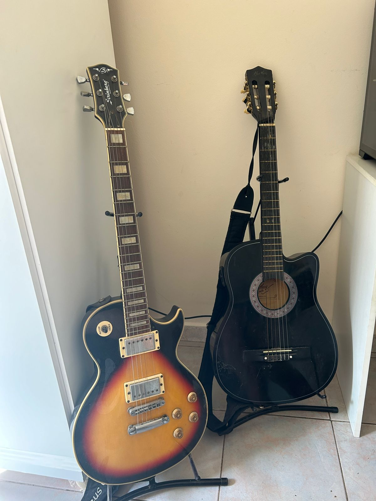

HOBBIES



No meu tempo livre, gosto de estudar música, frequentar a academia, jogar videogames e aprender idiomas.
Aprendi sozinho a tocar violão e guitarra e também fiz aulas de piano em conservatório. Estou interessado em
adquirir um violino no futuro.
Atualmente, estou jogando Elden Ring e, de vez em quando, Ragnarok Origin. Na academia, estou treinando há
três anos.
Além disso, tenho um interesse apaixonado por idiomas. Estudei inglês por 10 anos, espanhol por 4 anos e
francês por 1 ano, e hoje em dia estou estudando japonês a quase 1 ano.